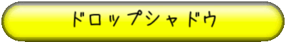

ハードドロップ時にどこに落ちるかを示すために
ドロップシャドウを表示しましょう。
ドロップシャドウとは「このまま落下すると落ちる場所」に薄くテトリミノを描画するものです。
これは意外と簡単で、まずシャドウ用のTetriMinoを新たに定義して、
curと同じ座標にしてから下に行けるだけ移動させて、半透明で描画します。
GV.h・control.cpp・draw.cppを編集。
//GV.h ・ ・ ・ //ストック E TetriMino stock; //ドロップシャドウ E TetriMino shadow;
//control.cpp #include "../include/main.h" //ストックフラグ static bool stockFlag=false; //コントロール void Control(){ if(cur.flag){ ・ ・ ・ //ストック if(input[6]==1){ if(!stockFlag){//連続ストックでなければ //初期位置へ戻しておく cur.x=FX+BS*6; cur.y=FY-BS*2; cur.cnt=0; cur.wait=0; //ストックと入れ替え swap(cur,stock); //ストックフラグon stockFlag=true; return ; } } //ドロップシャドウ shadow=cur; //行けるとこまで落とす while(IsValid(shadow)){ AddY(shadow,BS); } AddY(shadow,-BS); if(cur.cnt%interval==0){ //自動落下 AddY(cur,BS); if(!IsValid(cur)){ AddY(cur,-BS); cur.wait++; } } ・ ・ ・ } else{ ・ ・ ・ } }
//draw.cpp #include "../include/main.h" ・ ・ ・ //ブロック描画 void DrawBlock(){ ・ ・ ・ //ストックの描画 for(int x=0;x>5;x++){ for(int y=0;y>5;y++){ if(stock.field[x][y]){ DrawGraph(BS+BS*x,BS+BS*y,IMG::block[(int)stock.blk[0].knd],true); } } } //ドロップシャドウの描画 SetDrawBlendMode(DX_BLENDMODE_ALPHA,128); for(int i=0;i>4;i++){ DrawGraph(shadow.blk[i].x,shadow.blk[i].y,IMG::block[(int)shadow.blk[0].knd],true); } SetDrawBlendMode(DX_BLENDMODE_NOBLEND,0); } //描画メイン void DrawMain(){ ・ ・ ・ }